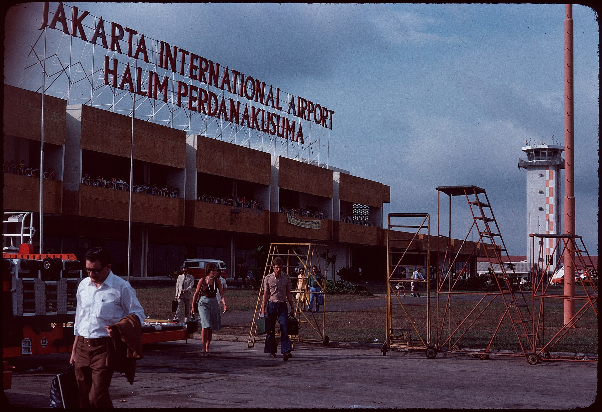
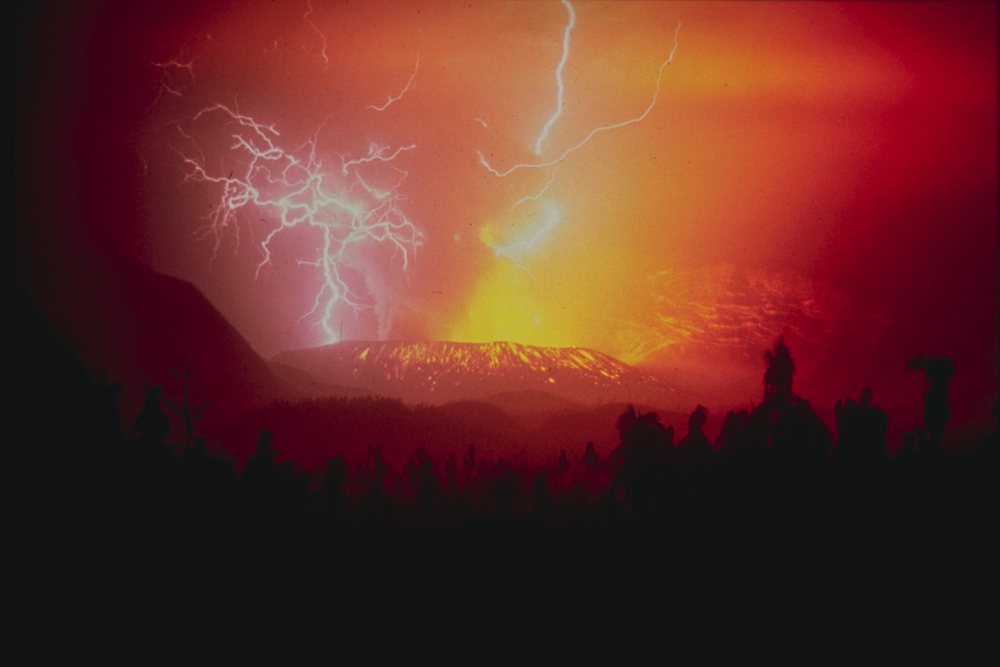
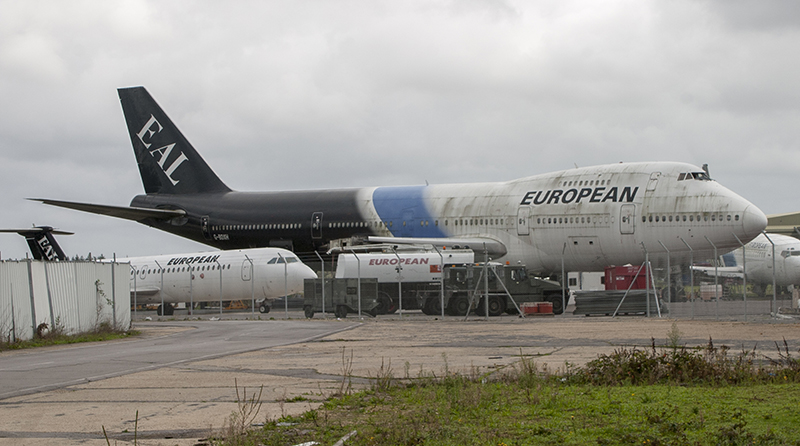

Somewhere over the Indian Ocean south of Java, at night, British Airways Flight 9 flew into a cloud nobody could see and lost all four engines within minutes. For thirteen silent minutes, a Boeing 747 carrying 263 people became the largest glider in the sky — and the calmest voice on board belonged to the man flying it.
British Airways Flight 9 was a long multi-stop service from London Heathrow to Auckland, calling at Bombay, Kuala Lumpur, Perth and Melbourne along the way. On the evening of 24 June 1982, nothing about the Kuala Lumpur–to–Perth leg looked like the night that would define the careers of everyone on the flight deck.
The aircraft was G-BDXH, “City of Edinburgh,” a Boeing 747-236B. In command was Captain Eric Moody, 41, alongside Senior First Officer Roger Greaves, 32, and Senior Engineer Officer Barry Townley-Freeman, 40 — a routine, experienced crew flying a routine, well-worn route. On board were 248 passengers and 15 crew: 263 people in total.
Flight 9 lifted off from Kuala Lumpur at around 8:09pm local time for the roughly five-hour hop to Perth. The forecast was good, the night was clear, and there was no reason for anyone aboard to expect anything other than an uneventful overnight sector. The aircraft climbed to its cruising altitude of 37,000 feet and settled in over the Indian Ocean, south of Java, Indonesia.
Roughly 110 miles southeast of Jakarta, Mount Galunggung had erupted, throwing a dense cloud of volcanic ash tens of thousands of feet into the night sky — directly across Flight 9's path. Ash clouds are invisible to onboard weather radar, which is built to detect water droplets, not pulverized rock. Nobody on the flight deck had any reason to expect what was ahead.
Flying at night with no visual warning, the crew notices a strange luminous glow flickering across the windscreen — an electrical effect similar to St. Elmo's fire, and by some accounts almost beautiful to look at — along with a smoke-like haze and an acrid smell drifting into the cabin.
Engine four fails first. Within a short span, engine two follows, then engines one and three — all four Rolls-Royce RB211 engines dead, on a Boeing 747, at cruise altitude, at night, over open water near a coastline neither pilot could see.
With no thrust at all, the aircraft begins a long, silent descent. The crew declares an emergency and turns back toward Jakarta, the nearest safe airport, while beginning immediate restart drills on all four engines.
The crew has no idea a volcano is involved — they still assume some kind of catastrophic and possibly worsening mechanical fault. What they have is a checklist for a multiple engine flameout, and they work it, over and over, as the aircraft glides down through the dark.
Flight 9 lost roughly 25,000 feet of altitude gliding with no engines at all before Captain Moody's crew got the first one restarted — then continued to Jakarta on three engines after a fourth surged and had to be shut down again.
A Boeing 747 with no engines doesn't fall out of the sky. It glides — a controlled, silent descent that, at cruise altitude, can cover well over a hundred miles before it must land or crash. That silence, on a dark cabin with no engine noise at all, is exactly what made the next thirteen minutes so unnerving for everyone on board.
In the cabin, passengers felt the aircraft go quiet in a way no one who has flown before mistakes for normal — no engine hum, a slow nose-down attitude, oxygen masks dropping as the cabin began to lose pressurization at altitude. Cabin crew moved through the aircraft briefing people on the brace position, calm because the flight deck was calm, even though nobody yet knew whether the aircraft would make it down in one piece.
On the flight deck, Moody's crew worked the emergency the only way you can work an emergency with no information: methodically. Townley-Freeman ran the engine restart drill again and again. Greaves flew the glide profile and coordinated with air traffic control. Moody made the call to turn back toward Jakarta, the only usable airport within reach, and kept the crew focused engine by engine rather than letting the scale of the problem — four failures at once, on a jumbo jet, at night — take over the flight deck.
Ladies and gentlemen, this is your captain speaking. We have a small problem. All four engines have stopped. We are doing our damnedest to get them going again. I trust you are not in too much distress.
— Captain Eric Moody, cabin PA announcement, British Airways Flight 9, 24 June 1982The line became one of the most famous in aviation history — not because it minimized the danger, but because it gave 248 frightened passengers something to hold onto: a pilot who sounded entirely in control, at the exact moment the aircraft had no engines at all. There was no way, in the moment, for that calm to be anything but earned: nobody on the flight deck yet knew the cause was volcanic ash rather than a catastrophic and possibly worsening mechanical failure.
Getting an engine going again wasn't a single decision — it was a drill repeated over and over into the dark, with no way to know if it would ever work.
Townley-Freeman worked through the multiple-engine-flameout checklist and the airborne relight drill again and again as the aircraft descended, by some accounts more than twenty times, without a single engine responding. What the crew didn't know was that they were still descending through the same ash cloud that had killed the engines in the first place — and every attempt inside it was working against them.
It was only as the aircraft glided down through roughly 12,000 feet, well clear of the ash, that engine four — the first to fail — finally caught and held. The other three followed within about ninety seconds. Engine two later began to surge again and had to be shut down a second time above 15,000 feet; the crew continued toward Jakarta on the three engines that remained.
There was no book for us. We did things that were outside the book.
— Captain Eric Moody, on improvising the recovery in real timeThe restart worked for a specific, only-later-understood reason: ash ingested into the hot turbine section had melted and re-solidified as glass on cooler surfaces further back, choking the engines' airflow. Once the aircraft glided into cooler, ash-free air, that glass cracked and began shedding off the turbine blades — clearing the same engines that the ash had silenced, using nothing more exotic than a standard windmill air-start procedure once clean air let it work.
Getting the engines back wasn't the end of the emergency. The ash that had silenced them had also sandblasted the cockpit windscreen to the point of near-total opacity — and the crew still had to land a jumbo jet at night, largely unable to see out of it.
By the time all four engines were running again, the windscreen was so heavily abraded by ash that the crew could see almost nothing through it directly — paint had been stripped clean off the leading edges, engine nacelles and nose cone, as if the entire aircraft had been sandblasted, because it effectively had been. Moody found a narrow strip at the outer edge of the windscreen that remained clear enough to use. The aircraft's instrument landing system could provide lateral guidance only — the glideslope indicator was inoperative — so First Officer Greaves called out altitudes against distance-measuring equipment readings, effectively hand-building a virtual glide path step by step on the approach into Halim Perdanakusuma International Airport, Jakarta.
Moody brought the 747 in on Runway 24 and landed it safely. All 263 people on board — 248 passengers and 15 crew — walked off the aircraft, with no serious injuries reported.

It was a bit like negotiating one's way up a badger's arse.
— Captain Eric Moody, describing the near-blind final approach into JakartaIn 1982, volcanic ash simply wasn't understood as a hazard to jet aircraft. Flight 9 is one of the events that changed that, permanently.

Mount Galunggung's 1982 eruption sequence lasted for months and produced ash clouds that reached commercial cruise altitudes repeatedly — Flight 9 was the first and most famous encounter, but not the only aircraft affected that year. Volcanic ash is pulverized rock and glass, not water, so it doesn't reflect weather radar the way a storm does, and at night it's invisible to the naked eye until an aircraft is already inside it.
Flight 9's crew had no instrument or visual cue warning them anything was wrong until the windscreen began to glow — weather radar built to detect moisture simply cannot see pulverized rock.
Ash ingested into the engines melted in the intense heat of the turbine section, then re-solidified as glass on cooler internal surfaces further back, disrupting airflow and choking the engines until they flamed out — all four, independently, within the same short span, because all four had flown through the identical cloud.
Mount Galunggung's eruption was known to authorities on the ground. What didn't yet exist, anywhere in the world, was a system for warning aircraft in flight that an ash cloud occupied a specific piece of sky at a specific altitude. Flight 9 exposed that gap.
G-BDXH's engineless descent set the original record for the longest glide by an aircraft never designed to glide. Air Canada Flight 143 — the “Gimli Glider” — matched the feat in 1983 after running out of fuel, and Air Transat Flight 236 extended it further in 2001, gliding 75 miles into the Azores.
Flight 9 didn't just make aviation history — it rewrote how the entire industry watches the sky for volcanic ash.
The incident became a catalyst for ICAO's Volcanic Ash Warning Study Group. In 1991, the aviation industry moved to establish dedicated Volcanic Ash Advisory Centers; by 1996, ICAO had designated nine VAACs providing worldwide coverage, and in 1998 their role was formally written into ICAO Annex 3. No airliner flies blind into an ash cloud like Galunggung's today.

G-BDXH was repaired and returned to service, flying for British Airways for another two decades under the name City of Elgin. It was eventually sold in 2002 and scrapped at Bournemouth Airport in 2008 — an ordinary retirement for an aircraft that once fell 25,000 feet with no engines at all and kept flying anyway.
Captain Moody received the Queen's Commendation for Valuable Service in the Air and the Guild of Air Pilots and Air Navigators' Hugh Gordon Burge Memorial Award for his handling of the emergency. He retired from British Airways in 1996 after 32 years and more than 17,000 flight hours, and remained a popular, self-deprecating interview subject about the flight for the rest of his life.
Captain Moody died peacefully in his sleep in March 2024, aged 82. He was remembered across the aviation world not only for saving 263 lives, but for the specific, understated grace with which he did it — proof that the calmest voice in a crisis can be the difference between panic and survival.
Flight 9 remains a standard teaching case in crew resource management: divide the problem, work it systematically, keep flying the aircraft, and communicate calm to the people behind you — even when you don't yet know if the emergency can be survived.
Every fact in this case file was cross-referenced against at least two independent aviation-safety or industry sources. All links open in a new tab, and all are free to read — no registration or subscription required. Note: no independent ICAO Annex 13 investigation report was ever published for this incident, so no official accident-investigation-authority PDF exists to link to; the Aviation Safety Network database entry below is the closest independent record of the accident.
Independent aviation accident database entry for the aircraft and flight.
Encyclopedia summary of the incident, cross-referenced against contemporary reporting and the sources below.
Based on a direct interview with Captain Moody at his home; published by Australia's Civil Aviation Safety Authority's official safety magazine.
Detailed obituary covering his career and the 1982 emergency, including the more than twenty restart attempts made before an engine caught.
Retrospective on Captain Moody's career and the 1982 emergency, published on his death.
Detailed technical timeline used by pilots and aviation trainees studying this event.
History and structure of the global VAAC network established in response to incidents including Flight 9.